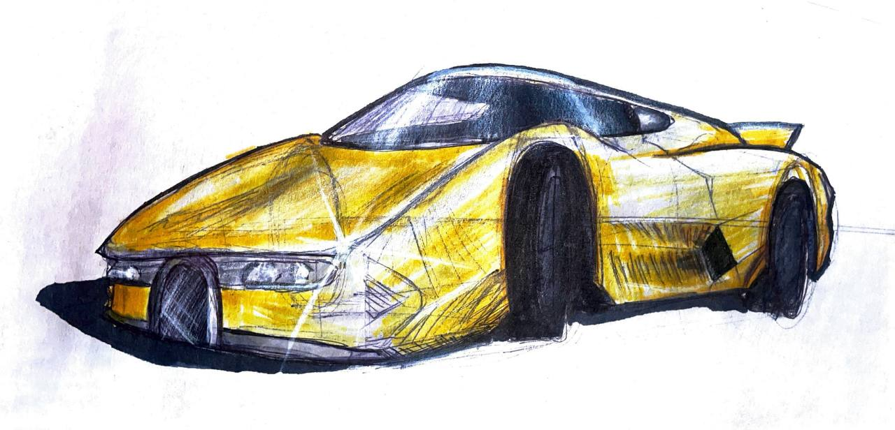

Inclusive play for modern playgrounds. An inclusive merry-go-round for Playcore. Research-driven — proprioceptive, vestibular, and tactile stimulation as design inputs. Sketch to scale models to SolidWorks, with an iteration the client held in his hands.

Playcore asked us to design a modern inclusive spinner. Inclusive play isn't really a feature you bolt on — it's a set of stimuli the product either supports or doesn't, and that became the frame for the whole project.
The research split into three buckets. Proprioceptive stuff (lifting, pushing, vibration — fine motor). Vestibular (swinging, rolling, spinning — balance and perception). Tactile (texture — fine and gross motor). Those three buckets ended up driving every form decision.
The formal starting point came out of nowhere: a 1900s steeplechase ride called the "human roulette wheel," where riders sat in the middle until centrifugal force slid them outward. That idea of play through spinning got reinterpreted into the Tulip Spinner.
I ran the process so the client could feel the thing, not just look at renders — sketches first, then physical scale models, SolidWorks iterations, and a printed scale model they could pick up and move around. Manufacturability and safety came in once the form was landing.